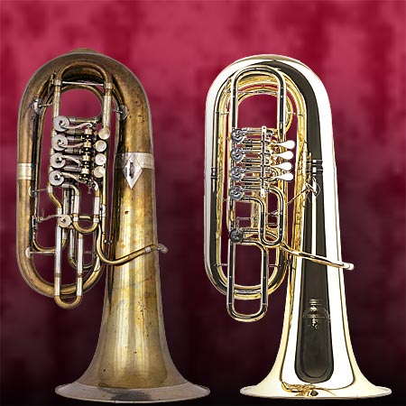

TUBA
su versatilidad permite utilizarla para reforzar cuerdas y vientos de madera o, cada vez más, como instrumento para solos. Las tubas también son utilizadas en bandas y en conjuntos de viento, en cuyo caso se utilizan dos instrumentos de cada una de las tres afinaciones: Do, mi y si.
Oficialmente, la tuba nace el 12 de septiembre de 1835 en Berlín, que en esta época pertenecía a Prusia. Todo esto se conoce a que esa es la fecha en que la tuba fue patentada.
